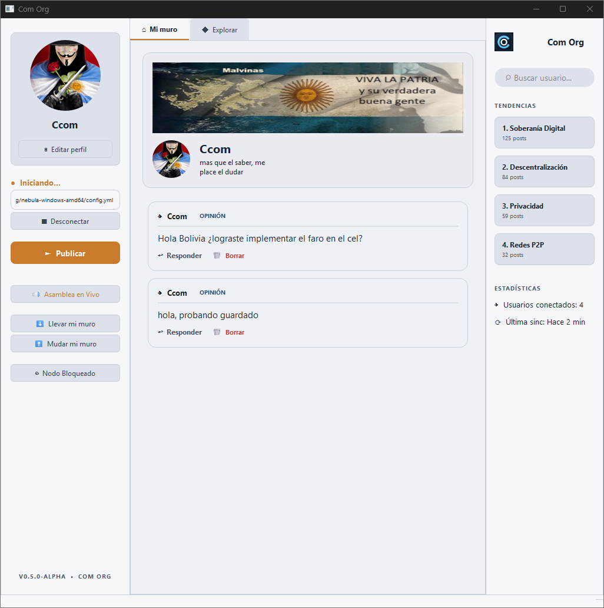
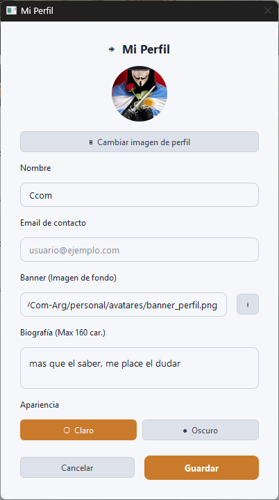
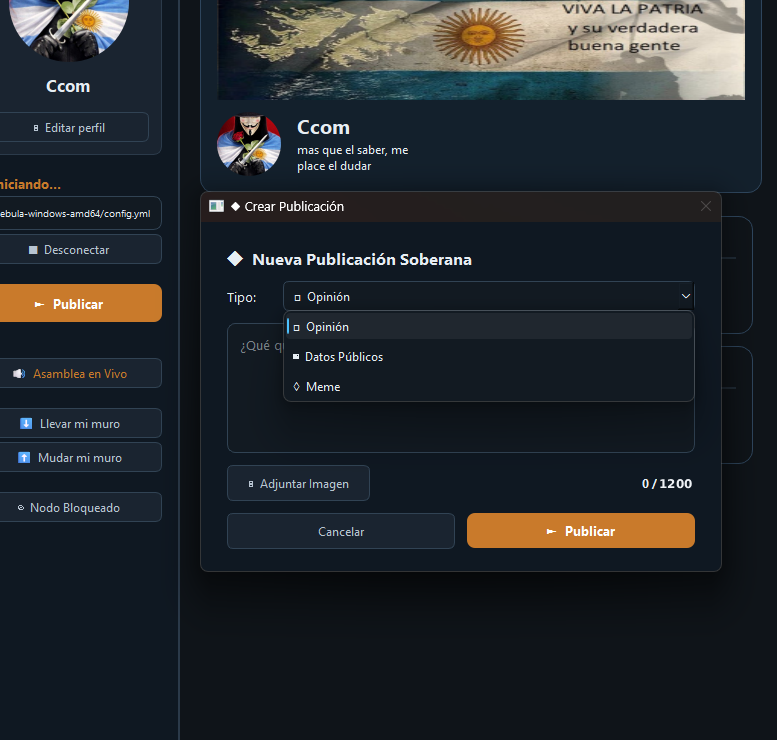
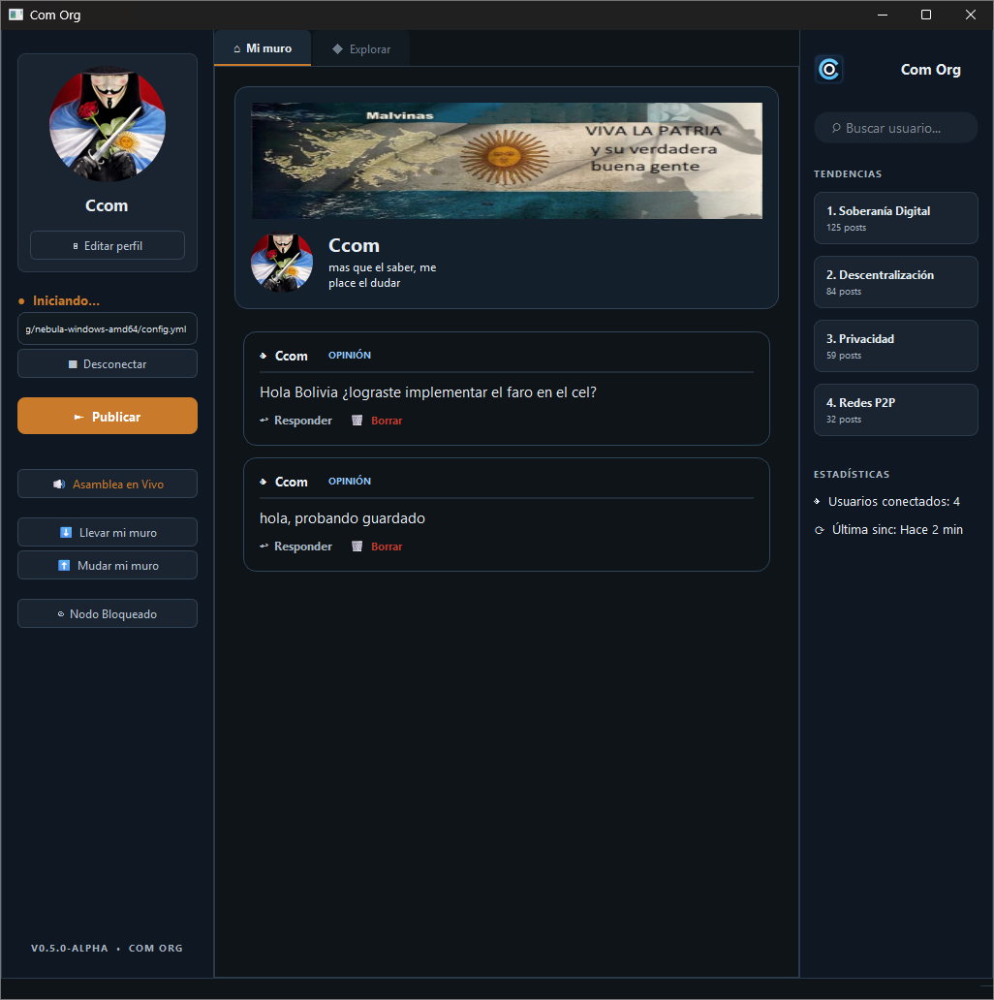
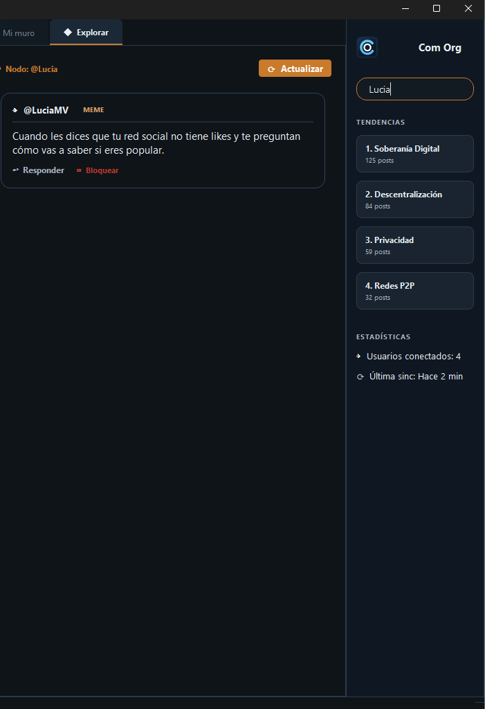
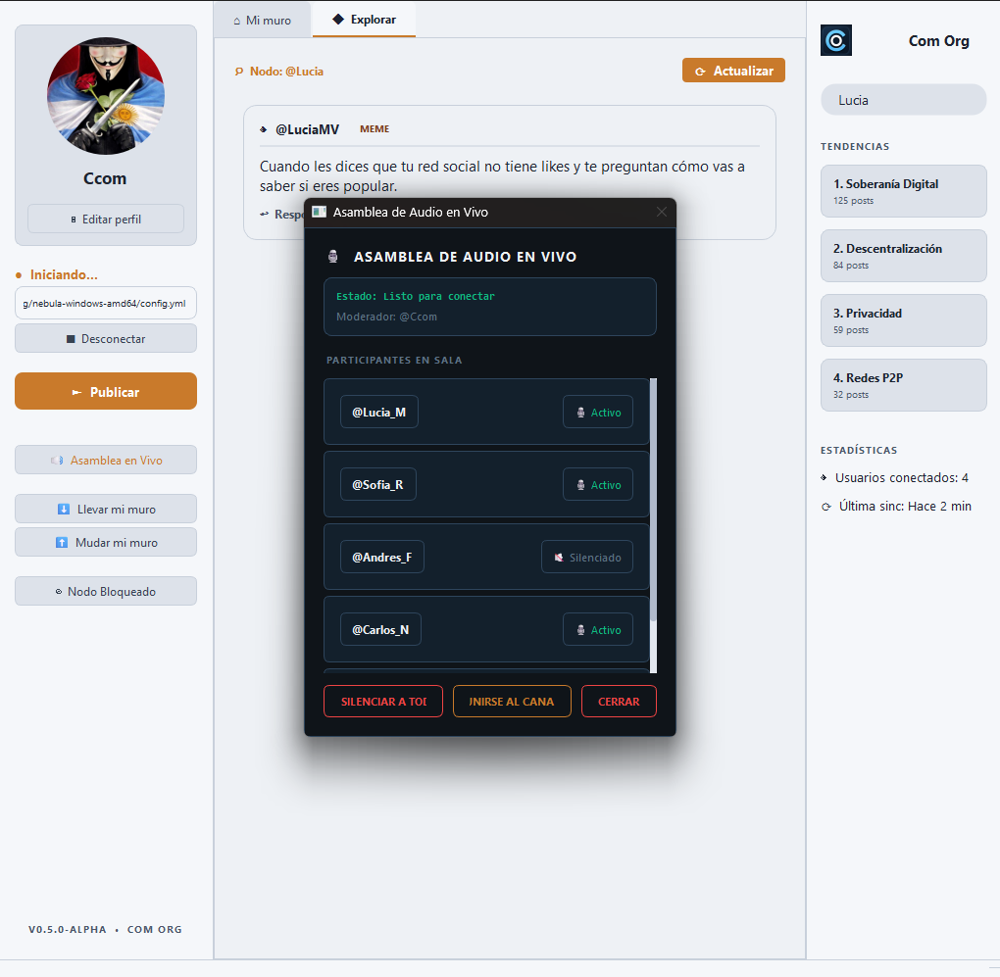

¡Te damos la bienvenida a tu espacio de comunicación soberano!
Com Org no es una red social común. Es un espacio diseñado para devolverte el control absoluto sobre tus datos, libre de algoritmos de adicción, publicidad invasiva o intermediarios corporativos. Aquí, tú eres el dueño absoluto de tu información. Todo lo que creas, compartes y ves reside única y exclusivamente en tu propio dispositivo.
Esta guía está diseñada especialmente para personas no técnicas, explicándote de manera sencilla cómo está organizada la aplicación, qué hace cada botón y cómo sacarle el máximo provecho.
🧭 1. Nuestra Filosofía
Antes de empezar, es importante que conozcas los cuatro pilares fundamentales que hacen de Com Org un sistema completamente diferente:
💾 Soberanía del Dato
No hay servidores centrales en la nube. Tus fotos, publicaciones y perfil están guardados localmente. Si decides borrar algo, desaparece de verdad.
🚫 Sin Mecánicas Adictivas
Eliminamos los "Me gusta", las reacciones y contadores infinitos. El foco es la conversación y el intercambio de ideas reales.
🔑 Seguridad Criptográfica
Tu identidad está vinculada a tu dispositivo con llaves privadas por hardware. Cada post se firma automáticamente con una huella criptográfica infalsificable.
🔒 VPN Nebula Automática
La aplicación se conecta en menos de un segundo a una red de seguridad privada y descentralizada de forma totalmente silenciosa.
🖥️ 2. Recorrido por la Interfaz
Al abrir la aplicación por primera vez, verás un diseño organizado en tres columnas principales, estructurado para un acceso cómodo y veloz:

A. La Barra Superior (Topbar)
-
Logo (
◆ Com Org): Identificador de tu nodo local. - Buscador Central: Localización inmediata de perfiles y textos en la red.
-
Botón
◈ Perfil: Configuración rápida de tu identidad visual (también accesible vía Ctrl + P).
B. Columna Izquierda (Identidad y Controles Rápidos)
- Tu Tarjeta de Identidad: Visualiza tu avatar y tu Firma Criptográfica (ID) (una serie de caracteres únicos y seguros).
- Límite de Caracteres: Selector rápido para ajustar tus preferencias de redacción.
-
Botón
🔊 Asamblea en Vivo: Acceso rápido a las salas de voz y debate en directo. -
Botón
⊘ Nodo Bloqueado: Panel rápido para gestionar los usuarios bloqueados o silenciados.
C. Columna Central (El Corazón de la Conversación)
- Mi Muro: Tus publicaciones y las respuestas directas que otros usuarios te han enviado.
- Explorar: Feed global descentralizado de publicaciones recientes en estricto orden cronológico.
D. Columna Derecha (Filtros y Estadísticas)
- Buscador en Vivo por Nombre: Filtro de contenidos instantáneo.
- Tendencias Locales: Temas recurrentes de debate en tu red.
- Estadísticas: Monitoreo técnico del uso de espacio local y estado de la sincronización.
👤 3. Gestión de tu Perfil y Apariencia
Haz clic en ◈ Perfil en la esquina superior derecha o usa el atajo
de teclado Ctrl + P para abrir el panel flotante. Aquí podrás cambiar tu
Nombre de Fantasía, biografía, subir un banner de fondo y modificar tu avatar.

Alternar entre Modo Claro y Oscuro: Desde la configuración de Perfil puedes definir si prefieres la visualización clara y de alto contraste o el tema oscuro de azul petróleo que descansa tu vista. La aplicación recordará tu elección automáticamente en cada inicio.
📝 4. Cómo Crear una Publicación
Hemos diseñado una interfaz de escritura minimalista que se enfoca en ideas concisas y directas:
-
Haz clic en el botón naranja
► Publicar(columna izquierda o central). - Se desplegará la Caja de Publicación en primer plano.
- Escribe tu contenido (hasta un límite predeterminado de 280 caracteres).
-
Adjuntar Imagen (Opcional): Utiliza el botón
▣ Imagen. La aplicación copiará la foto a tus carpetas internas locales para asegurar que esté disponible sin conexión. -
Presiona
► Publicar. El post se firmará criptográficamente de inmediato y se guardará localmente.

↩️ 5. Responder a Publicaciones y Búsqueda Reactiva
El motor de Com Org es el debate respetuoso y la búsqueda veloz de contenidos:
Conversaciones Anidadas
Al presionar ↩ Responder en cualquier publicación en tu feed, se
abrirá el editor para que envíes tu punto de vista. En el muro, las respuestas aparecerán de
forma indentada (desplazadas hacia la derecha) debajo del mensaje original, facilitando
enormemente el seguimiento de discusiones largas.
Búsqueda Reactiva en Vivo
Escribe directamente en el buscador de la columna derecha. De forma inmediata y reactiva (sin presionar Enter), la interfaz cambiará al feed de Explorar y filtrará los posts que coincidan con tu término en tiempo real.


⊘ 6. Borrado y Moderación Soberana
🗑️ Borrado Definitivo
A diferencia de las redes sociales convencionales, cuando haces clic en el botón rojo
🗑 Borrar en uno de tus posts y confirmas la acción, este y todas
sus respuestas asociadas se eliminan físicamente de la base de datos de tu disco duro de forma
inmediata.
⊘ Bloqueo de Nodos
Si consideras que algún usuario es molesto o no deseas leer sus aportaciones, presiona
⊘ Bloquear a un costado de su nombre. Automáticamente, sus
publicaciones desaparecerán de tus feeds. Puedes revertir esta acción ingresando a
⊘ Nodo Bloqueado en el menú de la izquierda y quitándolo de la
lista.
⬇️ 7. Mudar y Llevar tu Muro
Puesto que no hay almacenamiento central, eres el absoluto custodio de tus publicaciones. En la columna izquierda encontrarás las herramientas portátiles de migración:
-
⬇ Llevar mi muro(Exportar): Guarda todo tu historial en un único archivo portátil con extensión.comorg. -
⬆ Mudar mi muro(Importar): Recupera tu historial a partir de un archivo.comorgexistente. El sistema ignorará registros duplicados de forma inteligente para no alterar tu muro actual.
🔊 8. Asamblea en Vivo (Módulo de Voz)
Participa en debates y asambleas grupales de audio directo y descentralizado:
-
Haz clic en
🔊 Asamblea en Vivoen el menú de la izquierda para abrir la interfaz interactiva. -
Si eres el fundador de la sala: Verás una insignia de
👑 CREADORjunto a tu perfil. Tendrás la facultad de silenciar selectivamente a los participantes o presionarSilenciar a Todospara coordinar la palabra en debates amplios. - Si eres participante: Verás la lista de nodos activos y podrás alternar el estado de tu micrófono para solicitar intervención.

❓ Preguntas Frecuentes (FAQ)
personal/ del directorio de la aplicación.
Encontrarás subcarpetas para avatares/ y imagenes/ de
publicaciones. Los datos lógicos y relaciones de red se guardan en el archivo SQLite único
comorg_local.db.
personal/ sin respaldos, toda la
información se perderá irremediablemente, ya que no hay copias en la nube. ¡Se aconseja usar
la opción Llevar mi muro de forma regular!